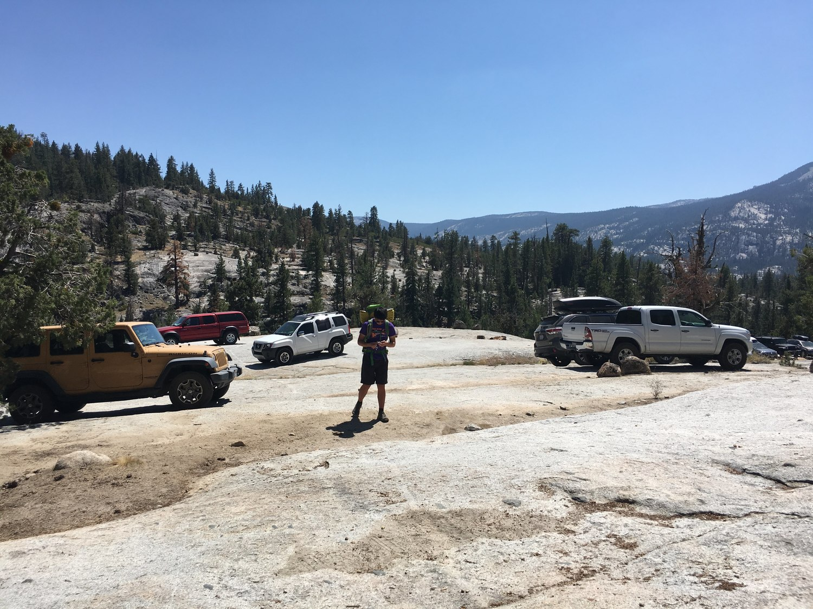
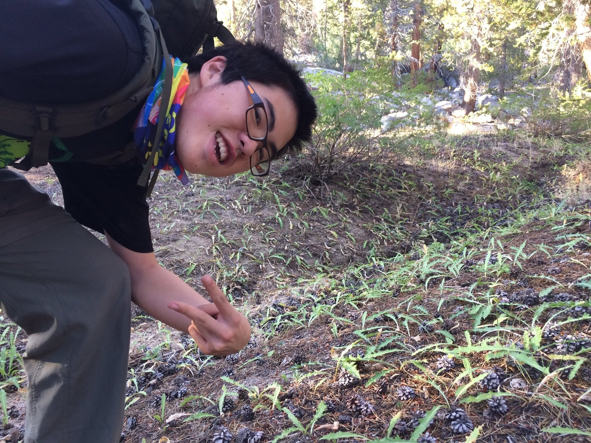
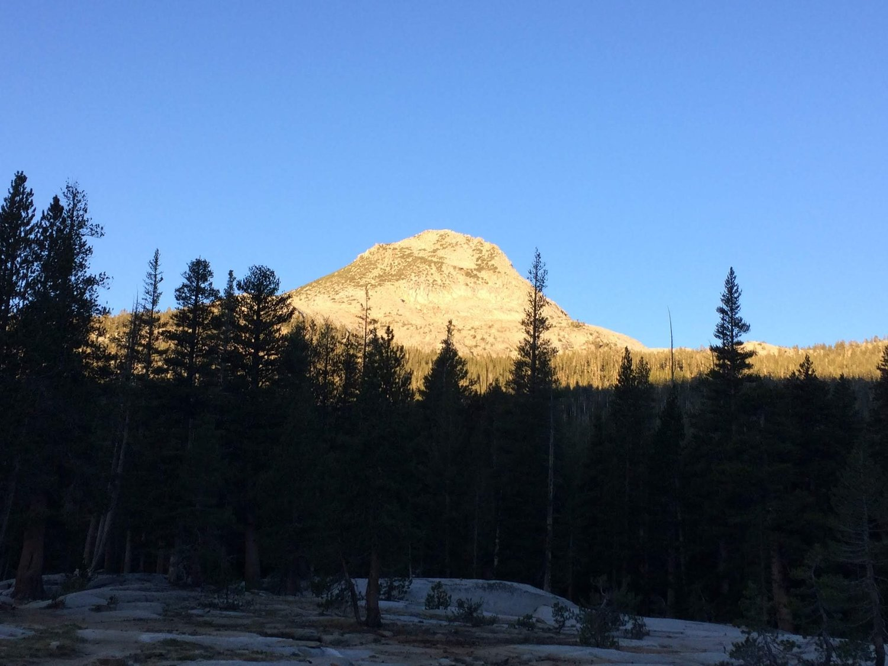
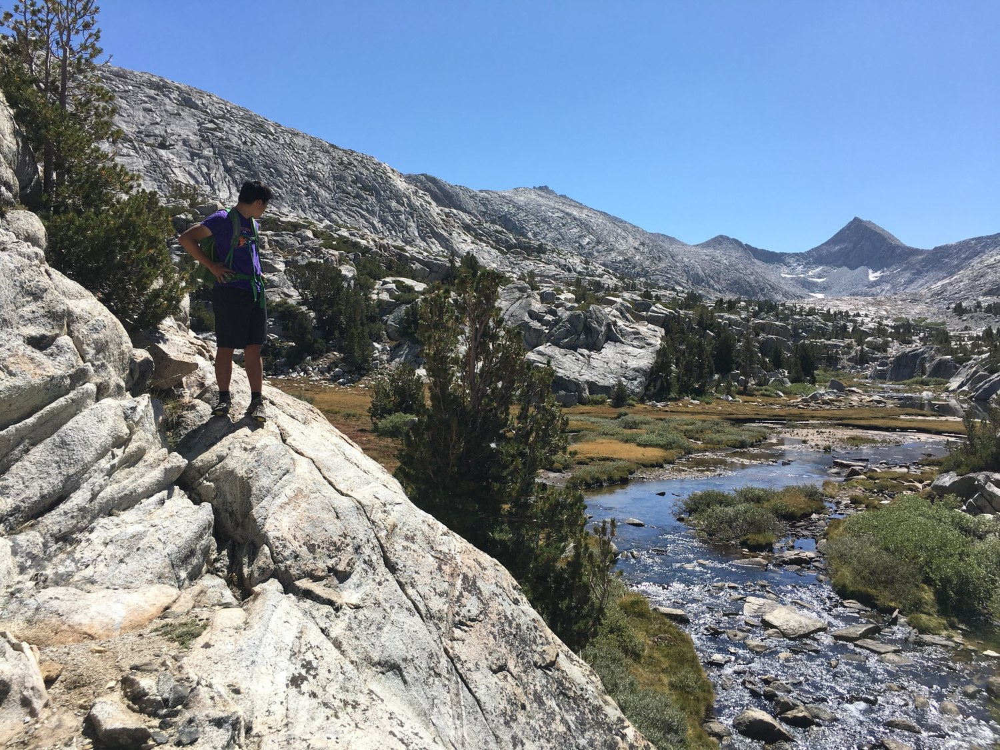
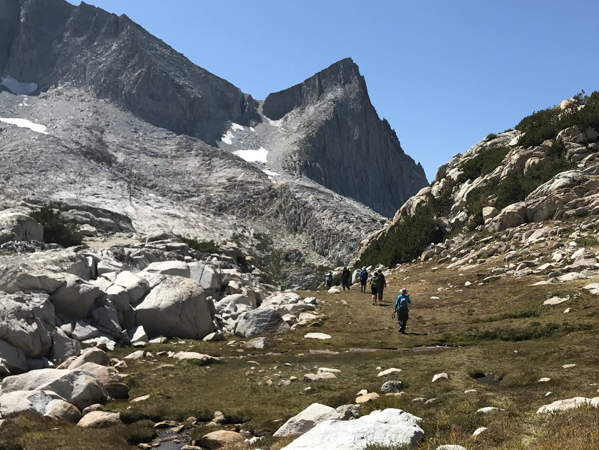
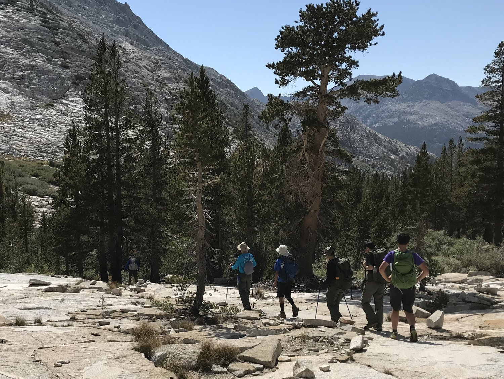
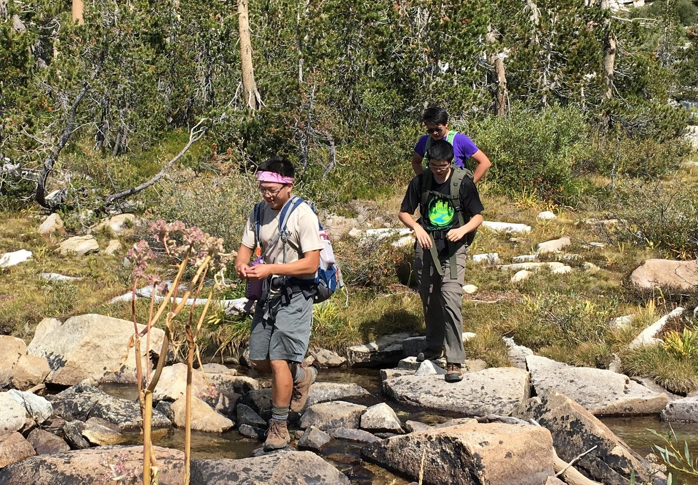

Bear Lakes Basin - Labor Day Backpacking 2018
This trip was almost a completely bust in terms of what we hiked and saw compared to what we wanted to hike and see. But, most important, it was a lot of quality time spent with good friends and lots of smiles, which is what counts.Participants: myself, Richard Liu, Daniel Lin, Jack Tian, Brandon Yuan, Mr. Yuan, and Mr. Liu.
Day 1
We drove up on only one car! The last two miles of the road was a 4wd road, so that part was really sketchy. We had to get out of the car several times to get enough clearance to get over some particularly rocky sections.{kind=link}

{kind=link}
The "sketchy" trailhead
The first day was just a 10 mile slog in trees, with maybe 2-3k feet of uphill.
{kind=link}
the less acclimatized were starting to feel it at this point

{kind=link}
Jack having fun!
We weren't happy with our progress that day, so we decided to hike through the night to get closer to the point where the off-trail section began. That did mean we ate dinner at a non-campsite location.
{kind=link}
cooking! richard brought a wood-burning stove (that I haven't seen being used again)
There aren't any pictures from that night. We were pretty bone tired.
Day 2
{kind=link}
Our campsite sunrise (when you hike in during the night, the morning view is ALWAYS a pleasant surprise!)
{kind=link}
I think the cold dampened our excitement
{kind=link}
{kind=link}
Getting set to get the **** off that trail!
Turns out the first few miles of the off-trail section had a small use trail. So it was really pseudo-cross country hiking. It was pretty relaxing, and we took a break by a nice creek.
{kind=link}
{kind=link}
{kind=link}
I think this picture is nice. Taken by Daniel Lin
{kind=link}
Heading above treeline!

{kind=link}
After the trip, there was a concerted patrol effort to submit a bit to the USGS to rename this peak to "Dragon Peak"
{kind=link}
Mr. Yuan is having fun too
{kind=link}
At this point, we lost the trail. It was kind of tough for the less-experienced members to adjust to the trial and error of xc hiking.

{kind=link}
I liked this valley!
{kind=link}
Pretty quaint
{kind=link}
This is probably like my most favorite picture of myself!
{kind=link}
We ended up turning back at Vee Lake. We had a nice relaxing break there! Richard did some wading, I played some Beach Boys, and we all lay down in the alpine grass for a while.
{kind=link}
All grins!
{kind=link}
Our group photo, sans Mr. Liu who was taking the picture

{kind=link}
This stuff is beautiful man, can't make this stuff up!
Eventually we had to dip back below tree line, and I think some of us were disappointed that we had spent so little time really enjoying the alpine country. But it was ok.

{kind=link}

{kind=link}
If you're wondering why Daniel is holding his hands like that, it's because he CAUGHT A ****ING FISH!
Yeah Daniel caught a fish in a small stream with his bare hands.
{kind=link}
The altitude was really taking its toll on Jack :(
{kind=link}
And Daniel

{kind=link}
{kind=link}